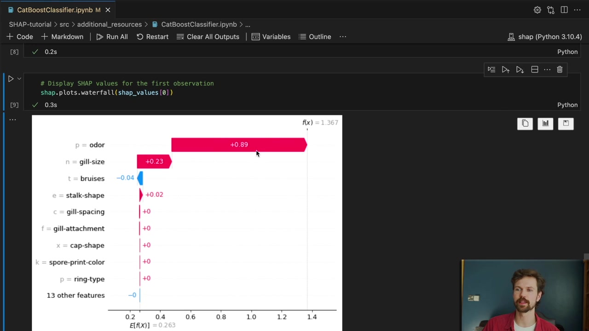
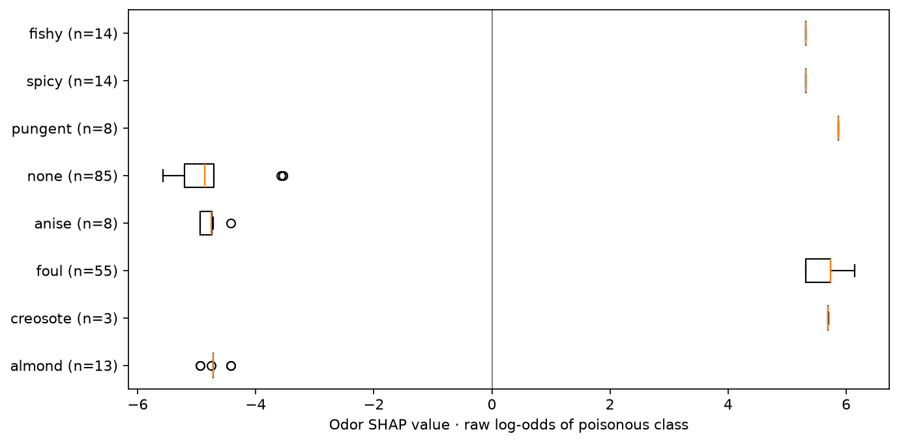

Explain Categorical Features Without Losing Their Meaning
Companion to A Data Odyssey’s video · Conor O’Sullivan
So far, our Abalone input included three columns for one recorded category: Sex_F, Sex_I, and Sex_M. The model sees three numerical inputs, so a standard explanation assigns three contributions. A reader, however, may want one answer about the original feature.
The problem becomes more visible in the playlist’s mushroom example. The dataset has 22 categorical inputs, including odor, cap shape, and habitat. Expanding all of them into indicator columns creates many more contributions than the original feature list suggests.
An inactive indicator can still contribute
Suppose odor has categories almond, foul, and none. One-hot encoding represents an almond odor as [1, 0, 0]. There can be a SHAP contribution for each of those three columns, including the two whose observed value is zero.
A zero input is still information relative to the reference. For instance, “not foul” can help distinguish this row from reference mushrooms whose foul indicator is 1. It would be a mistake to display only the active indicator and discard the other odor contributions.
For a readable summary of an existing one-hot explanation, add all contributions belonging to the same original feature:
odor_columns = [
j for j, name in enumerate(encoded_rows.columns)
if name.startswith("odor_")
]
odor_contribution = encoded_explanation.values[:, odor_columns].sum(axis=1)This grouping preserves the overall reconstruction because it adds contributions that already belonged to the same prediction. For example, +0.8, −0.2, and +0.1 become an odor contribution of +0.7 in the explained output’s units.
Grouping after the calculation is not generally the same as recomputing Shapley values with odor treated as one player from the start. In the expanded game, individual indicators can join separately, and masking can produce invalid category combinations. In a grouped game they move together. The reported sum is a useful summary of the expanded explanation, with that distinction understood.
CatBoost keeps the original input columns
CatBoost accepts categorical columns directly. It performs its own processing during training, while its SHAP interface can return contributions for the original input features. This gives us one contribution for odor rather than a scattered collection of odor indicators.
For the mushroom example, class 1 means the dataset labels the mushroom poisonous; class 0 means edible. The exercise explains a classifier trained on those labels. It is not a method for deciding whether an unidentified mushroom is safe to eat.
from catboost import CatBoostClassifier
model = CatBoostClassifier(
iterations=160, depth=4, learning_rate=0.05,
loss_function="Logloss", random_seed=42,
thread_count=2, verbose=False, allow_writing_files=False,
)
model.fit(X_train, y_train, cat_features=list(X_train.columns))
explanation = shap.TreeExplainer(
model,
feature_perturbation="tree_path_dependent",
model_output="raw",
)(rows)All 22 inputs in this dataset are categorical, so all their names appear in cat_features. We keep the question-mark value in stalk-root as an explicit unknown category. For a different dataset, distinguish missing values from ordinary category labels and make the model’s input handling consistent.
The resulting explanation has shape (200, 22). Its baseline and contributions reconstruct CatBoost’s RawFormulaVal, which is the binary margin here. Positive contributions increase the poisonous-class log-odds; negative contributions decrease them.


Compare categories directly
A numerical beeswarm uses red for high values and blue for low values. Unordered categories such as pungent and almond do not have a meaningful high-to-low scale. Assigning them arbitrary integer codes and coloring by those codes can suggest an ordering that does not exist.
Instead, group the odor contributions by observed odor and draw one distribution per category. A box plot shows the median, middle range, and unusually distant contributions. The category labels stay readable, and each group remains on the same SHAP scale.


All rows in one category need not have the same odor contribution. Other feature values can change how that category participates in the model’s prediction. A category with very few displayed rows also gives a much less informative distribution than one with many rows.
A simpler display does not make two models equivalent
Training CatBoost changes the predictor as well as its handling of categories. We should not expect its odor contribution to equal the grouped odor contribution from a separately trained XGBoost model. That would compare two different functions, possibly with different reference rules.
Choose a model using the predictive task and its validation results, then explain that model clearly. If the deployed model uses one-hot inputs, grouping its contributions may be the appropriate presentation. If CatBoost is a suitable model for the task, its direct categorical interface can make the explanation easier to follow. Some other modern tree implementations also support categories; CatBoost is the option demonstrated in this playlist.
The complete script, recorded results, and reproduced waterfall use the UCI Mushroom dataset. Our held-out accuracy is about 99.88%, and the raw-output reconstruction check passes. That describes this dataset split; it does not turn the attribution into a safety guarantee.

The last chapter changes the task again. Instead of explaining a class prediction, we will explain why an unsupervised model considers a day’s electricity readings unusual.